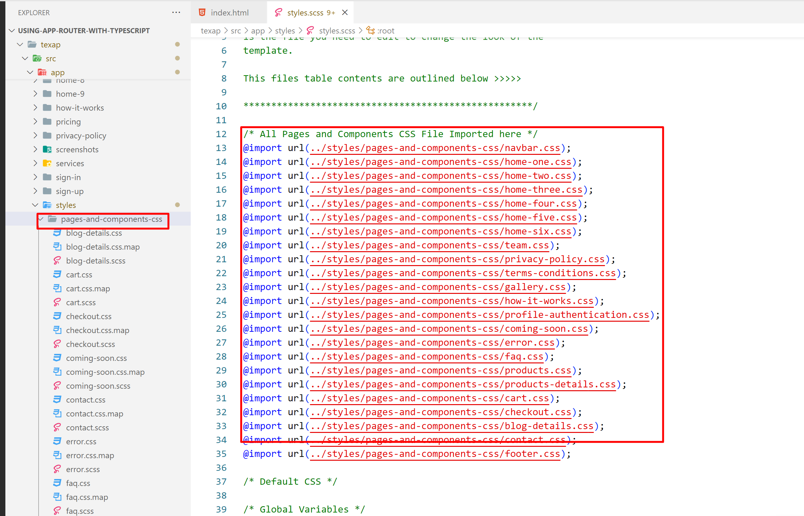

Getting Started
Welcome to Texap react template! We would like to thank you for choosing our template - Texap.
Setup Development Environment
To kickstart the development of the web app with Texap, at first need to setup the react development environment.
Following tools are needed to setup a react dev environment:
- Node JS
NodeJS works as a node package manager behind the scene. It is recommended to download and install the latest version of Node JS from its official site https://nodejs.org/en/
Preparation
You'll need to install Node.js (Recommended Version) (NPM comes along with it) and serve (an NPM package)
Use command line tool i.e. PowerShell or terminal and navigate to the project(Texap) root. This is PowerShell in windows and terminal on mac/linux.
Let's have a look on the setup process:Use terminal and navigate to the project root.
Then run : npm install
Then run : npm run dev
It'll return something like this in the console:
> texap@1.7.0 dev drive:\project
> next dev
ready - started on 0.0.0.0.3000, url: http://localhost:3000
[ event ] compiled successfully
Now, in the browser go to localhost:3000
For Production Build
Run npm run build to build the project.
Run : npm run build
See the official next.js doc here
Pages and Components Info
- Home Page Demo 1 (/src/app/page.tsx)
- Home Page Demo 2 (/src/app/home-2/page.tsx)
- Home Page Demo 3 (/src/app/home-3/page.tsx)
- Home Page Demo 4 (/src/app/home-4/page.tsx)
- Home Page Demo 5 (/src/app/home-5/page.tsx)
- Home Page Demo 6 (/src/app/home-6/page.tsx)
- Home Page Demo 7 (/src/app/home-7/page.tsx)
- Home Page Demo 8 (/src/app/home-8/page.tsx)
- Home Page Demo 9 (/src/app/home-9/page.tsx)
- About Modern Page 1 (/src/app/about-modern/page.tsx)
- About Simple Page 2 (/src/app/about-simple/page.tsx)
- and more..
Common Components:
- Navbar Style One (/src/components/Layouts/NavbarStyleOne.tsx)
- Navbar Style Two (/src/components/Layouts/NavbarStyleTwo.tsx)
- Navbar Style Three (/src/components/Layouts/NavbarStyleThree.tsx)
- Navbar Style Four (/src/components/Layouts/NavbarStyleFour.tsx)
- GoTop (/src/components/Layouts/GoTop.tsx)
- Footer Style One (/src/components/Layouts/FooterStyleOne.tsx)
- Footer Style Two (/src/components/Layouts/FooterStyleTwo.tsx)
- Footer Style Three (/src/components/Layouts/FooterStyleThree.tsx)
- App Download Style 1 (/src/components/Commom/AppDownloadStyle1.tsx)
- App Download Style 2 (/src/components/Commom/AppDownloadStyle2.tsx)
- App Download Style 3 (/src/components/Commom/AppDownloadStyle3.tsx)
- AppProgressStyle1 (/src/components/Commom/AppProgressStyle1.tsx)
- AppProgressStyle2 (/src/components/Commom/AppProgressStyle2.tsx)
- AppProgressStyle3 (/src/components/Commom/AppProgressStyle3.tsx)
- AppProgressStyle4 (/src/components/Commom/AppProgressStyle4.tsx)
- and more...
Dependencies
Here are the dependencies list which being used in the Texap React Template:
"dependencies": {
"@types/aos": "^3.0.7",
"@types/fslightbox-react": "^1.7.7",
"aos": "^2.3.4",
"fslightbox-react": "^1.7.6",
"next": "14.1.0",
"react": "^18",
"react-18-image-lightbox": "^5.1.4",
"react-accessible-accordion": "^5.0.0",
"react-dom": "^18",
"react-tabs": "^6.0.2",
"sass": "^1.70.0",
"sharp": "^0.33.2",
"swiper": "^11.0.6"
},
"devDependencies": {
"@types/node": "^20",
"@types/react": "^18",
"@types/react-dom": "^18",
"typescript": "^5"
}
Change the Site Title
Change the Logo
To change your Site logo by following screenshot
404 Page
To change 404 and setting you can change by following this screenshot here.
Back to Top Arrow
To change Back to Top Arrow and setting you can change by following this screenshot here.
Global Global CSS
To change global CSS file path /src/app/styles/style.scss

Note: After SCSS file run then it will be work
How to Run The SCSS File
Please open the file Visual Studio Code Editor. And follow the video tutorial.
Here the Link: https://www.youtube.com/watch?v=0MWmv1Gvv5w
24-Hour Turnaround Support:
Quick, Dedicated & Professional Support!
We only provide support through our ticketing system. Please submit your ticket by visiting the EnvyTheme Support System.
For any pre-purchase query, please use live chat on the item demo site also, email, and the item’s comment section on ThemeForest. Thanks!